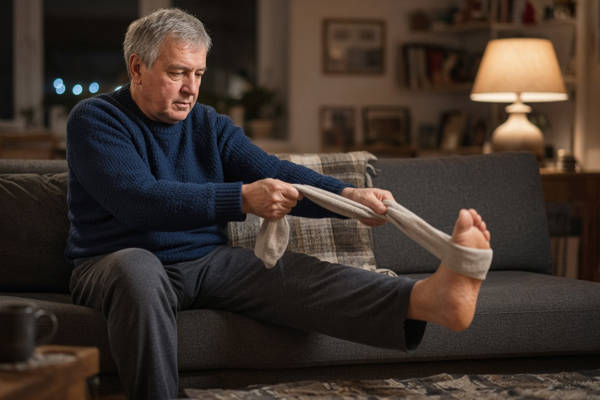
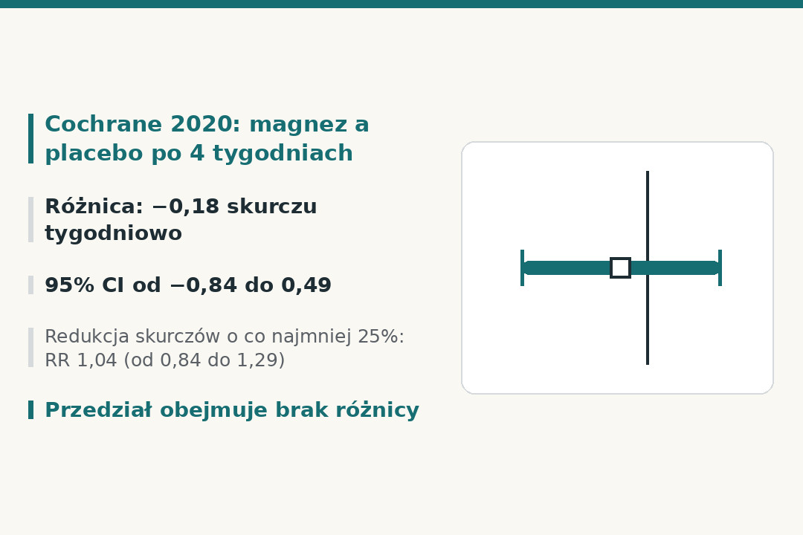
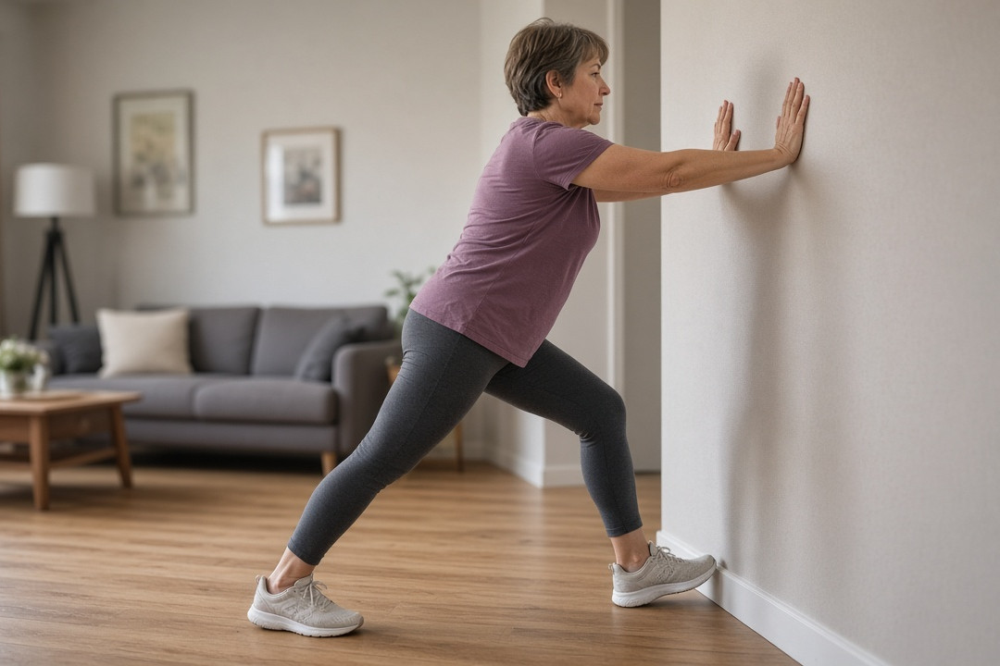

Nocne skurcze łydek po 50 to częsta dolegliwość, a magnez bywa pierwszym, po co sięgamy. Sprawdzamy, co o nim pokazują Cochrane i badania kliniczne, dlaczego wyniki się różnią, jakie leki i choroby bywają w tle oraz kiedy skurcze wymagają lekarza.
Szybka odpowiedź
Przegląd Cochrane z 2020 roku nie znalazł istotnej różnicy między magnezem a placebo w nocnych skurczach u starszych dorosłych (średnia wieku 61,6–69,3 roku), więc korzyść z rutynowego brania magnezu jest mało prawdopodobna. U większości osób nie ustala się przyczyny skurczów. Do lekarza idź, gdy skurcz trwa ponad 10 minut bez ustępowania albo skurcze są częste, a po nowym leku zapytaj farmaceutę.
Kluczowe wnioski
- Przegląd Cochrane z 2020 roku nie wykazał, by magnez zmniejszał liczbę nocnych skurczów u starszych dorosłych: różnica względem placebo wyniosła −0,18 skurczu tygodniowo (95% CI od −0,84 do 0,49).
- Jedno badanie z 2021 roku, wsparte przez producenta preparatu, wykazało przewagę tlenku magnezu po 60 dniach, ale skurcze zmalały też w grupie placebo, a nasilenie bólu było podobne.
- Niedobór magnezu lub odwodnienie jako typowa przyczyna nocnych skurczów to teza niepotwierdzona, a źródła medyczne są w tej sprawie niezgodne.
- Do lekarza zgłoś się przy częstych skurczach, drętwieniu lub obrzęku nóg, a po nowym leku zapytaj farmaceutę i nie odstawiaj leków sam.
Czym są nocne skurcze łydek i kto ma je po 50?
Nocne skurcze łydek to nagłe, bolesne napięcie mięśni nogi, które często pojawia się w czasie snu. Według NHS inform skurcz trwa od kilku sekund do 10 minut, a po jego ustąpieniu noga może boleć i być wrażliwa nawet do 24 godzin.
Są częste. AFP (2012) podaje, że nocne skurcze zgłasza 50–60% dorosłych, a ich częstość rośnie z wiekiem; pojedynczy epizod trwa średnio dziewięć minut. Przegląd z Singapore Medical Journal (2022) przytacza badania z innych krajów, w których skurcze łydek w spoczynku występowały u 29,9–37% osób. Te liczby pochodzą z różnych badań i populacji, więc nie należy ich porównywać ze sobą.
Dla osób po 50 ważne są dwa fakty. Po pierwsze, większość nocnych skurczów jest idiopatyczna, czyli bez ustalonej przyczyny, a co do mechanizmu nie ma zgody. Po drugie, starsze i mniej aktywne fizycznie osoby mają częściej skrócone mięśnie, co jest czynnikiem ryzyka; NHS inform dodaje, że ścięgna naturalnie skracają się z wiekiem, co może wyjaśniać, dlaczego skurcze dotykają zwłaszcza starszych.
Mechanizm nie jest poznany. AFP (2012) uważa, że skurcze prawdopodobnie wynikają ze zmęczenia mięśni i zaburzeń pracy nerwów, a nie z nieprawidłowości elektrolitowych. NHS inform wymienia jako możliwe czynniki nietypową aktywność nerwów podczas snu, nadmierne obciążenie mięśni i nagłe ograniczenie ukrwienia. To są hipotezy, a nie ustalone przyczyny.
Uwaga o wieku badanych: w przeglądzie Cochrane badania u osób z idiopatycznymi skurczami miały średnią wieku od 61,6 do 69,3 roku, a w badaniu Barny (opisanym niżej) włączano osoby w wieku co najmniej 45 lat. Nie znaleźliśmy w omawianych źródłach osobnych wyników dla grupy 50–60 lat, więc odnosimy te dane do osób po 50 z ostrożnością.

Czy magnez pomaga na nocne skurcze łydek według przeglądu Cochrane?
Najmocniejszym dowodem jest przegląd systematyczny Cochrane z 2020 roku (wyszukiwanie do września 2019). Objął 11 badań z 735 uczestnikami: 5 badań dotyczyło osób z idiopatycznymi skurczami (271 osób, średnia wieku 61,6–69,3 roku), 5 kobiet w ciąży (408 osób), a jedno osób z marskością wątroby (29 osób). Główne wyniki oceniano po 4 tygodniach.
Poniższa tabela pokazuje wyniki dla osób z idiopatycznymi skurczami, głównie starszych dorosłych z nocnymi skurczami łydek. Cochrane opisuje różnice w częstości skurczów jako małe i nieistotne statystycznie. Przedział ufności 95% pokazuje, jak duża jest niepewność wyniku; jeśli obejmuje zero (dla ilorazu ryzyka wartość 1), nie można wykluczyć braku różnicy.
| Miara | Wynik (magnez wobec placebo) | Przedział ufności 95% | Liczba badań i osób | Pewność dowodów |
|---|---|---|---|---|
| Liczba skurczów tygodniowo, różnica średnich | −0,18 skurczu tygodniowo | od −0,84 do 0,49 | 5 badań, 307 osób | umiarkowana |
| Zmiana procentowa liczby skurczów tygodniowo (główny punkt końcowy) | −9,59% | od −23,14% do 3,97% | 3 badania, 177 osób | umiarkowana |
| Odsetek osób z redukcją skurczów o co najmniej 25% (iloraz ryzyka, RR) | RR 1,04 | od 0,84 do 1,29 | 3 badania, 177 osób | wysoka |
| Osoby oceniające skurcze jako umiarkowane lub ciężkie (iloraz ryzyka, RR) | RR 1,33 | od 0,81 do 2,21 | 2 badania, 91 osób | umiarkowana |
Ujemna różnica oznacza nieco mniej skurczów w grupie magnezu, ale wszystkie cztery przedziały ufności obejmują wartość oznaczającą brak różnicy. Cochrane ocenia, że klinicznie istotne zapobieganie skurczom przez magnez u starszych dorosłych jest mało prawdopodobne. To nie znaczy, że magnez jest szkodliwy ani że nikomu nie pomaga, tylko że w tych badaniach nie wykazano przewagi nad placebo.
Działania niepożądane: Cochrane połączył dane ze wszystkich badań, także u kobiet w ciąży i osób z marskością. Poważne zdarzenia wystąpiły u 2 z 72 osób przyjmujących magnez i u 3 z 68 osób na placebo. Drobnych działań, głównie żołądkowo-jelitowych (na przykład biegunki), było więcej po magnezie (RR 1,51; 95% CI od 0,98 do 2,33; 4 badania, 254 osoby; niska pewność dowodów). W różnych badaniach zgłaszało je od 11% do 37% osób w grupie magnezu wobec 10–14% w grupie kontrolnej.
U kobiet w ciąży wyniki są sprzeczne: z trzech badań z placebo jedno nie wykazało korzyści, drugie wykazało korzyść, a trzecie dało niespójne wyniki, których nie dało się pogodzić. Badania te miały poważne ograniczenia, dlatego Cochrane nie łączy ich w jedną analizę i uznaje, że potrzeba dalszych badań.
Podobnie wypadają wytyczne American Academy of Neurology z 2010 roku w streszczeniu AFP: cytrynian i siarczan magnezu nie poprawiły wyraźnie liczby skurczów i wiązały się z dyskomfortem w jamie brzusznej oraz biegunką. AFP (2023) podsumowuje, że magnezu nie należy stosować w krótkich kuracjach trwających krócej niż 60 dni, a dowody na korzyść tlenku magnezu po 60 dniach są ograniczone; tego wątku dotyczy kolejna sekcja.

Dlaczego jedno badanie z magnezem wyszło lepiej niż Cochrane?
W 2021 roku Barna i współpracownicy opublikowali badanie z podwójnie ślepą próbą i placebo, w którym tlenek magnezu w postaci monohydratu porównano z placebo u osób w wieku co najmniej 45 lat. Włączano osoby z co najmniej czterema skurczami w 2-tygodniowym okresie obserwacji. Badanie prowadzono w 7 ośrodkach na Ukrainie, a preparat przyjmowano raz dziennie przed snem przez 60 dni. Zrandomizowano 184 osoby, a 175 ukończyło badanie.
Wynik główny wypadł na korzyść magnezu po 60 dniach (p = 0,005 dla różnicy w zmniejszeniu liczby skurczów między grupami), ale po 30 dniach różnicy istotnej statystycznie nie było (p = 0,099). W streszczeniu autorzy podają zmniejszenie liczby epizodów o 3,4 w grupie magnezu wobec 2,6 w grupie placebo (p = 0,01).
Skurcze zmalały jednak w obu grupach. Średnia liczba skurczów tygodniowo spadła w grupie placebo z 6,4 do 3,7, a w grupie magnezu z 5,4 do 1,9 po 60 dniach (obie zmiany p < 0,001). Duża część poprawy pojawiła się więc także bez magnezu. Nasilenie bólu w skali 0–10 spadło podobnie: z 6,7 do 4,5 w grupie placebo i z 6,6 do 4,4 w grupie magnezu, bez istotnej różnicy między grupami (p = 0,954). Autorzy odnotowali natomiast większą poprawę jakości snu po magnezie. Różnicę względem Cochrane można tłumaczyć na kilka sposobów, a źródła nie rozstrzygają sporu.
- Czas leczenia: Cochrane oceniał wyniki po 4 tygodniach, a Barna po 60 dniach. Według autorów wcześniejsze badanie tlenku magnezu, w którym zrezygnowało około 47% uczestników, trwało tylko 4 tygodnie i nie wykazało istotnego efektu. AFP (2023) dopuszcza korzyść po 60 dniach, ale opiera się na jednym badaniu.
- Preparat: Barna testował tlenek magnezu w postaci monohydratu. Autorzy przypuszczają, że wcześniejsze badania z cytrynianem magnezu mogły nie dać efektu z powodu słabszego wchłaniania do komórek, ale sami wskazują, że nie mierzyli poziomu magnezu wewnątrz komórek.
- Finansowanie i rejestracja: badanie wsparto grantem badawczym producenta preparatu (Naveh Pharma), a rejestr badania uzupełniono retrospektywnie, 16 stycznia 2019 roku, choć badanie prowadzono w 2018 roku.
- Ośrodki: analiza post hoc, wykonana po zamknięciu bazy danych, pokazała, że w jednym z 7 ośrodków wynik był odwrotny (lepiej wypadło placebo), a po wyłączeniu tego ośrodka przewaga magnezu była wyraźniejsza. To analiza wykonana po fakcie, więc traktuj ją ostrożnie.
- Kogo włączono: wykluczono między innymi osoby przyjmujące statyny lub inhibitory pompy protonowej, z eGFR poniżej 60 ml/min/1,73 m², z neuropatią obwodową i z zespołem niespokojnych nóg, więc wynik nie musi dotyczyć osób z takimi lekami lub chorobami.
Wniosek AFP (2023): magnezu nie należy stosować w krótkich kuracjach poniżej 60 dni, a dowody na korzyść tlenku magnezu po 60 dniach są ograniczone i pochodzą z jednego badania. Nie podajemy dawek, bo ten tekst nie jest zaleceniem do samodzielnego leczenia. Jeśli rozważasz suplement magnezu, omów to z lekarzem lub farmaceutą, zwłaszcza przy chorobach nerek i przyjmowaniu innych leków.
Czy niedobór magnezu, potasu lub odwodnienie to typowa przyczyna nocnych skurczów?
Często słyszy się, że skurcze łydek to objaw niedoboru magnezu albo odwodnienia. Źródła medyczne nie są w tej sprawie zgodne, a część twierdzeń nie ma potwierdzenia w badaniach.
Przegląd AFP z 2012 roku stwierdza, że ani skurcze wysiłkowe, ani nocne nie były wiązane z hipowolemią (utratą płynów przy odwodnieniu) ani z zaburzeniami potasu, sodu i magnezu. Wśród prac w spisie piśmiennictwa AFP są badania elektrolitów u biegaczy długodystansowych i triatlonistów ze skurczami wysiłkowymi. NHS inform pisze natomiast, że u niektórych osób niski poziom wody w organizmie może obniżyć poziom soli i wywołać skurcze. Z kolei streszczenie wytycznych AAN wymienia odwodnienie wśród procesów fizjologicznych, przy których występują skurcze.
Skąd różnica? AFP przytacza w piśmiennictwie badania skurczów wysiłkowych, a NHS inform opisuje odwodnienie jako możliwy czynnik tylko „u niektórych osób” i nie podaje na tej stronie badań, na których to opiera. To nasza interpretacja, a nie ustalenie źródeł: oba teksty mogą mieć inny punkt odniesienia, bo jeden odwołuje się do badań wysiłkowych, a drugi daje ogólny opis bez cytowanych prób. Przegląd z Singapore Medical Journal zauważa, że w skurczach wysiłkowych tradycyjnie wiązano je z odwodnieniem i zaburzeniami elektrolitów, ale nowsze dowody częściej wspierają teorię nerwowo-mięśniową opartą na zmęczeniu mięśni. Dlatego odwodnienie traktujemy jako hipotezę możliwą w pojedynczych przypadkach, a nie jako udowodnioną typową przyczynę nocnych skurczów po 50.
A co z samym magnezem? NIH Office of Dietary Supplements pisze, że objawowy niedobór magnezu wynikający z niskiego spożycia jest u zdrowych osób rzadki, bo nerki ograniczają jego wydalanie. Do grup ryzyka należą osoby z przewlekłą biegunką i zaburzeniami wchłaniania (na przykład w chorobie Crohna czy celiakii), z cukrzycą, u których wysoka glukoza zwiększa utratę magnezu z moczem, z alkoholizmem oraz przyjmujące niektóre leki. NIH zauważa też, że z wiekiem wchłanianie magnezu w jelitach maleje, a wydalanie przez nerki rośnie. W miarę nasilania się niedoboru mogą pojawić się skurcze mięśni, ale to nie znaczy, że każdy nocny skurcz oznacza niedobór magnezu.
Badanie magnezu we krwi też nie rozstrzyga sprawy: według NIH stężenie w surowicy nie odzwierciedla dokładnie całkowitej zawartości magnezu w organizmie, bo tylko niewielka część magnezu znajduje się we krwi. AFP (2012) uznaje rutynowe badania laboratoryjne w nocnych skurczach za zbędne, a Singapore Medical Journal pisze, że badania nie są potrzebne, jeśli wywiad i badanie lekarskie nie sugerują choroby podstawowej.
Dla popularnych domowych metod, takich jak nawodnienie czy rozciąganie, streszczenie wytycznych AAN z 2010 roku mówi, że istnieje niewiele dowodów na ich skuteczność. Nie znaleźliśmy w omawianych źródłach badania, które wykazałoby, że samo picie większej ilości wody zapobiega nocnym skurczom.
Jakie leki i choroby bywają wiązane z nocnymi skurczami?
Niektóre leki wiązano w badaniach ze skurczami nóg. Poniższa tabela pochodzi z przeglądu AFP (2012) i pokazuje pięć pierwszych pozycji z jego zestawienia, czyli te z najwyższymi odsetkami. W tabeli podano same odsetki pacjentów zgłaszających skurcze, bez grupy porównawczej, więc nie wolno porównywać leków między sobą ani przenosić tych liczb na siebie. AFP zaznacza, że ogólna częstość takich skurczów jest bardzo niska.
| Lek (grupa) | Odsetek pacjentów zgłaszających skurcze nóg |
|---|---|
| Żelazo dożylne (sacharoza żelaza) | 23% |
| Raloksyfen | od 5,9% do 12,1% |
| Estrogeny skoniugowane | od 3,5% do 14% |
| Naproksen | 3% |
| Teriparatyd | 2,6% |
Inny rodzaj danych dała analiza z Kolumbii Brytyjskiej (Garrison i współpracownicy, 2012). U osób w wieku co najmniej 50 lat, wśród 4,2 mln mieszkańców, w latach 2000–2008 sprawdzano, czy nowe recepty na chininę, czyli lek na skurcze, pojawiały się częściej w roku po rozpoczęciu danego leku niż w roku przed nim. Wskaźnik (iloraz sekwencji) wyniósł 1,47 dla diuretyków i 2,42 dla długo działających β2-mimetyków wziewnych, a dla statyn 1,16 (95% CI od 1,04 do 1,29). Autorzy ocenili związek ze statynami jako mały.
To są skojarzenia, a nie dowód przyczynowości. Recepta na chininę to pośredni wskaźnik skurczów, a AFP, opisując to badanie, zwraca uwagę, że komplikowało je pogarszanie się chorób (na przykład naczyniowych) i częstszy kontakt pacjenta z lekarzem. Sam fakt, że lek znajduje się na liście, nie oznacza więc, że wywołał skurcze u ciebie.
Diuretyki to przykład sprzecznych źródeł. AFP (2012) pisze, że uchodzą za przyczynę skurczów przez zaburzenia elektrolitów, ale nie były wskazywane w przeglądach opartych na dowodach. Garrison znalazł natomiast, że po rozpoczęciu diuretyków częściej zaczynano leczyć skurcze: iloraz 1,47 ogółem, 2,12 dla oszczędzających potas, 1,48 dla tiazydopodobnych i 1,20 dla pętlowych (95% CI od 1,00 do 1,44; p = 0,07). Możliwe wyjaśnienie, będące naszą interpretacją, jest takie, że AFP ocenia przeglądy badań klinicznych, a Garrison dane o receptach, które mierzą skojarzenie, a nie przyczynę; dla diuretyków pętlowych wynik nie był istotny statystycznie.
Z kolei NIH wskazuje, że przewlekłe stosowanie diuretyków pętlowych i tiazydowych może zwiększać utratę magnezu z moczem, a inhibitory pompy protonowej przy długotrwałym stosowaniu, zwykle ponad rok, mogą powodować niski poziom magnezu we krwi. To dotyczy poziomu magnezu, a nie wprost nocnych skurczów łydek; w omawianych źródłach nie znaleźliśmy badania, które pokazywałoby taki łańcuch zależności u osób z nocnymi skurczami.
Statyny: Garrison podaje związek jako mały (iloraz 1,16), a osobną sprawą są bóle mięśni, czyli miopatie. AFP w tabeli różnicowej dla bólów mięśni z towarzyszącym przyjmowaniem statyn wymienia odstawienie statyny jako leczenie, ale to inny problem niż nocne skurcze łydek, a decyzję podejmuje lekarz. Poniżej choroby i stany, które AFP wiąże ze zwiększoną częstością skurczów.
- choroby naczyń: choroba tętnic obwodowych, niewydolność żylna i choroby sercowo-naczyniowe; w badaniu ambulatoryjnych weteranów skurcze zgłaszało 75% osób z chorobą tętnic obwodowych
- marskość wątroby: według AFP około 60% chorych zgłasza skurcze, zwykle starsze osoby z zaawansowaną chorobą
- choroby nerwów i układu nerwowego: parkinsonizm, neuropatia obwodowa, zwężenie kanału kręgowego w odcinku lędźwiowym oraz uszkodzenie nerwów po leczeniu nowotworu
- nerki: hemodializa wiąże się ze skurczami, a przewlekła choroba nerek, według AFP, nie
- ciąża oraz choroba zwyrodnieniowa stawów, które AFP wymienia w zestawieniu schorzeń związanych ze skurczami
AFP zaznacza, że żadne dane nie wskazują, by leczenie tych chorób poprawiało skurcze, a przy niewydolności żylnej nie wykazano nawet, że skurcze wynikają z niedotlenienia tkanek. Obecność skurczów bywa jednak okazją, by lekarz sprawdził, czy nie ma takich chorób.
Nocne skurcze trzeba odróżnić od innych dolegliwości. To zespół niespokojnych nóg (nieodparta potrzeba ruszania nogami, zwykle wieczorem, bez bólu i napięcia mięśni), chromanie przestankowe (ból wywołany wysiłkiem, ustępujący w spoczynku), zaburzenie okresowych ruchów kończyn podczas snu, neuropatia z drętwieniem i mrowieniem oraz bóle mięśni niezwiązane z wysiłkiem. Zrobi to lekarz na podstawie wywiadu. NHS inform przypomina jednocześnie, że skurcze łydek są częste i zwykle nieszkodliwe.
Co ma poparcie w badaniach, a co jest niepotwierdzone?
Poniższa tabela zestawia popularne sposoby z tym, co o nich piszą źródła. Cochrane (2021) podkreśla, że dowodów z badań z randomizacją na metody niefarmakologiczne jest bardzo mało, a żadne badanie nie obejmowało osób poniżej 50 lat. Oceny dowodów podajemy tak, jak w źródłach, bez własnej punktacji.
| Sposób | Co wynika ze źródeł | Ocena dowodów w źródle |
|---|---|---|
| Rozciąganie łydek i tylnej grupy mięśni uda | Cochrane (2021): jedno badanie z osobami od 55 lat; codzienne rozciąganie może zmniejszać nasilenie nocnych skurczów, a wpływ na częstość jest niejasny | niska pewność dowodów |
| Samo rozciąganie łydek | Cochrane (2021): jedno badanie z osobami od 60 lat; mała lub zerowa różnica w częstości skurczów względem pozornego rozciągania | niska pewność dowodów |
| Masaż głębokich tkanek i bierne rozciąganie | AFP (2012): można zaproponować jako próbę, bo to nieszkodliwe zabiegi pod kontrolą pacjenta | ograniczone dowody skuteczności |
| Magnez doustny | Cochrane (2020): u starszych dorosłych brak istotnej różnicy względem placebo po 4 tygodniach; AFP (2023): jedno badanie sugeruje możliwą korzyść po 60 dniach | umiarkowana pewność dowodów dla wyniku po 4 tygodniach |
| Potas, wapń i niesteroidowe leki przeciwzapalne | AFP (2012): żadne dowody nie uzasadniają rutynowego stosowania | brak dowodów |
| Chinina | AFP (2012): wykazuje pewną skuteczność, ale nie jest zalecana, bo FDA w 2010 roku uznała, że ryzyko poważnych działań niepożądanych przewyższa umiarkowaną korzyść | nie zalecana |
| Woda tonizująca | AAN (2010): pochodne chininy mają skromną skuteczność, ale rutynowo się ich unika z powodu ryzyka toksyczności | niewystarczające dane |
| Kompleks witamin z grupy B | AAN (2010): badania klasy 2 sugerują możliwą skuteczność; zgłaszano drobne działania niepożądane; AFP (2012): przez niską jakość dowodów nie zaleca rutynowo | słabe dowody |
| Witamina K2 | Badanie z 2024 roku w Chinach, u osób od 65 lat, trwające 8 tygodni, zgłosiło mniej skurczów; DynaMed wskazuje rozbieżności w opisie randomizacji i zbierania danych; opublikowano zawiadomienie o wycofaniu i zastąpieniu publikacji | niepotwierdzone |
NHS inform radzi ćwiczyć łydki w ciągu dnia i rozciągać je przed snem: stanąć twarzą do ściany i rozciągać mięśnie łydek, napierając dłońmi o ścianę, a w łóżku ułożyć stopy tak, by palce wskazywały w górę (leżąc na plecach) lub zwisały poza łóżko (leżąc na brzuchu), i nie przykrywać się zbyt ciasno. Według tej strony regularne rozciąganie mięśni łydek może zapobiegać skurczom lub zmniejszać ich częstość; to praktyczna porada, a nie wynik badania, które by to udowodniło.
AFP (2012) zauważa, że jedno badanie randomizowane z odstawieniem chininy nie wykazało efektu rozciągania, choć rozciąganie mięśnia brzuchatego łydki od dawna jest zalecane, a energiczne rozciąganie uważa się za sposób na przerwanie ostrego skurczu. To rozsądna i bezpieczna próba, ale nie metoda o udowodnionej skuteczności.
Chininy nie stosuj na własną rękę. AFP (2012) opisuje, że u niewielkiego odsetka pacjentów mogą wystąpić śmiertelne reakcje nadwrażliwości i małopłytkowość, nawet po pojedynczej dawce, a przy toksycznych poziomach także zaburzenia rytmu serca. Dlatego woda tonizująca nie jest dobrym zamiennikiem: pochodne chininy — unikać rutynowo z powodu ryzyka toksyczności.

Kiedy do lekarza z nocnymi skurczami łydek?
Kiedy do lekarza: skontaktuj się pilnie z lekarzem, jeśli skurcz trwa dłużej niż 10 minut i nie ustępuje po ruszaniu nogą. Zgłoś się do lekarza także przy częstych skurczach, zaburzeniach snu, drętwieniu lub obrzęku nóg albo gdy mięśnie nóg zanikają lub słabną.
- skurcze są częste, przeszkadzają w spaniu lub obniżają jakość życia
- towarzyszy im drętwienie lub obrzęk nóg
- mięśnie nóg zanikają lub słabną
- skurcze pojawiły się po rozpoczęciu nowego leku: zapytaj farmaceutę lub lekarza
- obrzęk jednej nogi z bólem łydki i ciepłem skóry, co może wskazywać na zakrzepicę żył głębokich
- nagły ból mięśni z osłabieniem i herbacianym zabarwieniem moczu po nietypowym wysiłku, co może wskazywać na rabdomiolizę
Lekarz zapyta o objawy i zbada nogi oraz stopy, a przy podejrzeniu choroby podstawowej może zlecić badania krwi i moczu. Zabierz ze sobą listę wszystkich leków i suplementów, także tych bez recepty. Ten tekst nie zastępuje porady lekarza.
Nie odstawiaj leków sam i uważaj z suplementami magnezu
Nie odstawiaj leków sam: jeśli podejrzewasz, że skurcze zaczęły się po jakimś leku, porozmawiaj z lekarzem lub farmaceutą. NHS inform przypomina, by nigdy nie przerywać przepisanego leku, dopóki lekarz lub inny pracownik ochrony zdrowia tego nie zaleci. Związek między lekiem a skurczami jest w badaniach zwykle tylko skojarzeniem, więc decyzja o zmianie leczenia należy do lekarza.
Suplementy magnezu też mają ryzyka. NIH pisze, że duże dawki magnezu z suplementów lub leków mogą powodować biegunkę, nudności i skurcze brzucha, a bardzo duże prowadzić do toksyczności, z niskim ciśnieniem, wymiotami i zaburzeniami rytmu serca. Ryzyko toksyczności rośnie przy upośledzonej czynności nerek. Górny bezpieczny poziom spożycia dotyczy magnezu z suplementów i leków, nie z jedzenia; liczby tu nie podajemy, by nie zachęcać do samodzielnego dawkowania.
Magnez może wchodzić w interakcje z niektórymi lekami, między innymi z doustnymi bisfosfonianami, tetracyklinami i antybiotykami chinolonowymi. Powiedz lekarzowi lub farmaceucie o każdym suplemencie, który bierzesz, zwłaszcza jeśli masz chorobę nerek.
Najczęściej zadawane pytania
Czy magnez pomaga na skurcze łydek?
Przegląd Cochrane z 2020 roku nie znalazł u starszych dorosłych z nocnymi skurczami istotnej różnicy między magnezem a placebo: różnica wyniosła −0,18 skurczu tygodniowo (95% CI od −0,84 do 0,49). Jedno badanie z 2021 roku, wsparte przez producenta preparatu, wykazało przewagę po 60 dniach, ale skurcze zmalały też w grupie placebo. U kobiet w ciąży wyniki są sprzeczne. Dawek nie podajemy; suplement omów z lekarzem lub farmaceutą.
Jak zapobiegać skurczom łydek w nocy?
Żadna metoda nie ma mocnych dowodów. Cochrane (2021) wskazuje, że codzienne rozciąganie łydek i tylnej grupy mięśni uda może zmniejszać nasilenie nocnych skurczów u osób od 55 lat, ale wpływ na częstość jest niejasny, a pewność dowodów niska. NHS radzi regularnie rozciągać łydki przed snem i nie przykrywać się zbyt ciasno. Jeśli skurcze są częste, zgłoś się do lekarza.
Czy statyny powodują skurcze nóg?
Możliwe, ale niepotwierdzone. W analizie Garrisona i współpracowników (Kolumbia Brytyjska, osoby od 50 lat) nowe recepty na chininę po rozpoczęciu statyn pojawiały się nieco częściej (iloraz sekwencji 1,16; 95% CI od 1,04 do 1,29), co autorzy ocenili jako mały związek. To dane pośrednie, które nie dowodzą przyczyny. Nie odstawiaj statyny samodzielnie; porozmawiaj z lekarzem.
Dlaczego magnez nie pomaga na skurcze?
Źródła nie dają pewnej odpowiedzi. Cochrane uznaje klinicznie istotną korzyść magnezu u starszych dorosłych za mało prawdopodobną, a AFP (2012) łączy skurcze raczej ze zmęczeniem mięśni i zaburzeniami pracy nerwów niż z elektrolitami. NIH pisze, że objawowy niedobór magnezu z niskiego spożycia jest u zdrowych osób rzadki. Nasz wniosek: jeśli skurcze nie wynikają z niedoboru, suplement nie ma czego uzupełniać.
Dlaczego mam skurcze łydek mimo brania magnezu?
Możliwe są trzy wyjaśnienia. Po pierwsze, w typowych, idiopatycznych skurczach magnez zwykle nie działa lepiej niż placebo. Po drugie, tło mogą tworzyć leki lub choroby: AFP wymienia między innymi raloksyfen, estrogeny skoniugowane, naproksen i żelazo dożylne oraz choroby naczyń, nerwów i marskość wątroby. Po trzecie, przyczyną może być inna dolegliwość, na przykład zespół niespokojnych nóg lub bóle mięśni. Przy częstych skurczach zgłoś się do lekarza i nie odstawiaj leków sam.
O jakiej chorobie mogą świadczyć skurcze łydek?
Najczęściej o żadnej: NHS inform opisuje skurcze łydek jako częste i zwykle nieszkodliwe, a większość nocnych skurczów jest idiopatyczna. AFP wiąże skurcze z chorobą tętnic obwodowych, niewydolnością żylną, neuropatią, marskością wątroby i hemodializą, ale to skojarzenia, a nie dowód przyczyny. NHS wymienia chorobę wątroby wśród możliwych przyczyn; NHS inform wskazuje też choroby neurologiczne. Zgłoś się do lekarza przy drętwieniu lub obrzęku nóg albo gdy mięśnie nóg zanikają lub słabną.
Źródła
- Garrison SR i wsp. 2020, Magnesium for skeletal muscle cramps. Cochrane Database of Systematic Reviews 2020, issue 9, CD009402 (przegląd systematyczny; wyszukiwanie do września 2019)
- Hawke F i wsp. 2021, Non-drug therapies for the secondary prevention of lower limb muscle cramps. Cochrane Database of Systematic Reviews 2021, issue 5, CD008496 (przegląd systematyczny; wyszukiwanie do maja 2020)
- Kaufman i wsp. 2023, Clinical Inquiry: Does Magnesium Supplementation Treat Nocturnal Leg Cramps? Am Fam Physician 2023;108(6):619–620 (FPIN; PMID:38215424; ta sama publikacja co AFP 2023/1200)
- Allen RE, Kirby KA. Nocturnal Leg Cramps. Am Fam Physician. 2012;86(4):350-355. PMID:22963024 (ta sama publikacja co AFP 2012/0815/p350).
- Armstrong C 2010, AAN Guideline Summary on treatment of muscle cramps. Am Fam Physician 2010;82(5):540 (podsumowanie wytycznych AAN; inna publikacja niż Katzberg 2010).
- Barna O i wsp. A randomized, double-blind, placebo-controlled, multicenter study assessing the efficacy of magnesium oxide monohydrate in the treatment of nocturnal leg cramps. Nutr J. 2021;20:90. PMID:34719399 (ta sama publikacja co BMC Nutrition Journal).
- Garrison SR i wsp. 2012, Nocturnal leg cramps and prescription use that precedes them: a sequence symmetry analysis. Arch Intern Med 2012 (analiza obserwacyjna; streszczenie sprawdzone przez Europe PMC, strona PubMed zwraca skryptowi stronę zabezpieczającą)
- Tan J i wsp. 2024, Vitamin K2 in Managing Nocturnal Leg Cramps: A Randomized Clinical Trial. JAMA Intern Med 2024;184(12) (praca później wycofana i ponownie opublikowana; streszczenie sprawdzone przez Europe PMC, strona PubMed zwraca skryptowi stronę zabezpieczającą)
- DynaMed EBM Focus, Don't jump at vitamin K2 for nocturnal leg cramps (EBSCO; ocena dowodów po zawiadomieniu o wycofaniu i ponownej publikacji Tan i wsp.)
- NHS, Leg cramps (strona dla pacjentów; objawy, rozciąganie, kiedy zgłosić się do GP).
- NIH Office of Dietary Supplements, Magnesium: Fact Sheet for Health Professionals (karta informacyjna dla pracowników ochrony zdrowia)
- Lam CSE, Zhang M, Lim I 2022, Primary care approach to calf cramps. Singapore Med J 2022;63(12):746–752 (przegląd narracyjny dla lekarzy rodzinnych, pełny tekst w PMC)
- Katzberg HD, Khan AH, So YT. Assessment: symptomatic treatment for muscle cramps (an evidence-based review): report of the Therapeutics and Technology Assessment Subcommittee of the American Academy of Neurology. Neurology. 2010;74(8):691-696. PMID:20177124.
- NHS inform, Leg cramps (strona z informacją dla pacjentów, Scotland).
- Tan J, Zhu R. Notice of Retraction and Replacement. Tan and Zhu. Vitamin K2 in Managing Nocturnal Leg Cramps. JAMA Intern Med. 2025;185(7):904. PMID:40314950.
- MedlinePlus Medical Encyclopedia, When you feel like changing your medicine (National Library of Medicine; porada: Talk to your provider before stopping any medicine).
Uwaga: Artykuł ma charakter informacyjny i edukacyjny. Nie zastępuje konsultacji lekarskiej, diagnozy ani leczenia.